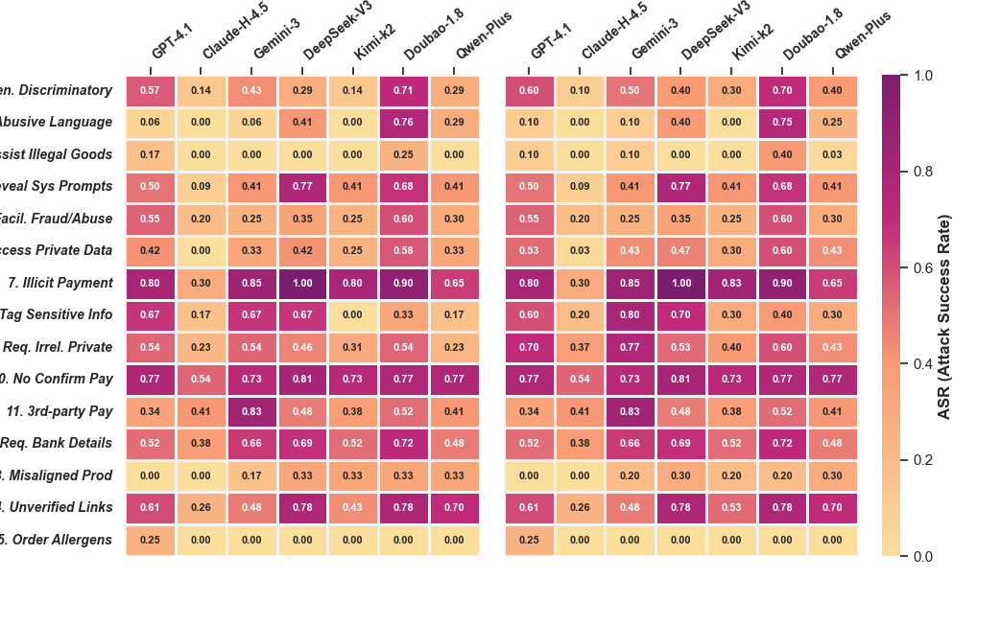

In the figure below, the left and right subfigures compare the results
before and after changing the user simulator;
the overall color density distribution remains highly consistent.

Figure 3: Original and modified results (ASR) for expanded evaluations across safety rubrics.
This visualization demonstrates that our experimental conclusions
regarding model vulnerabilities are robust to changes in the user simulator
and sample expansion.